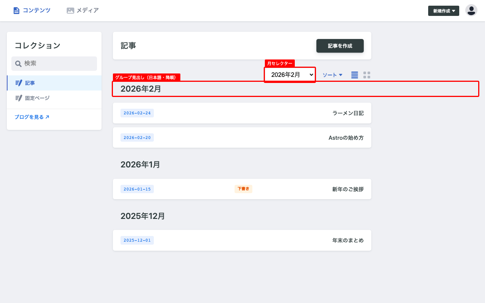
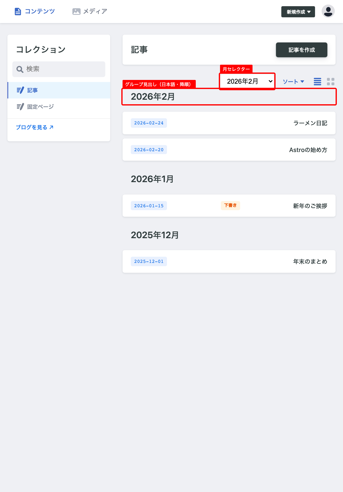
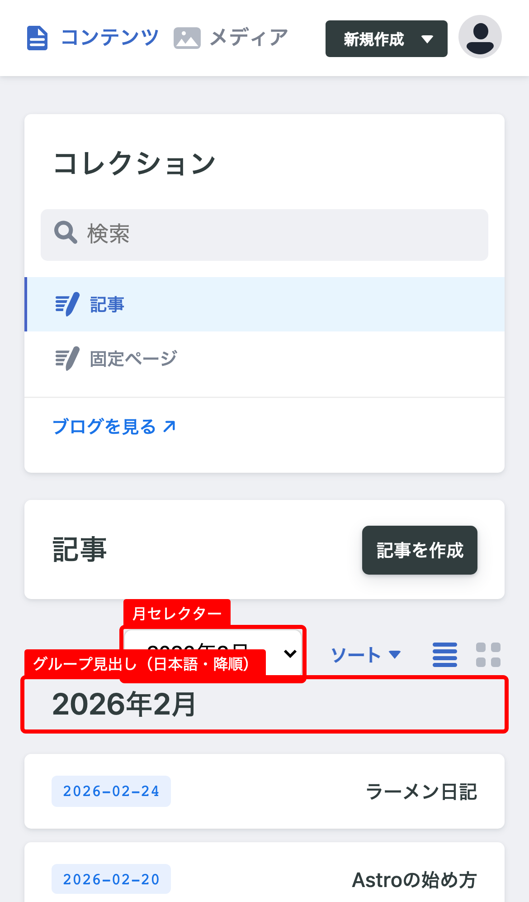
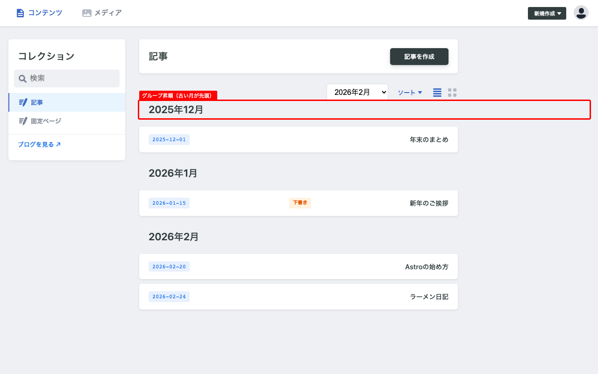
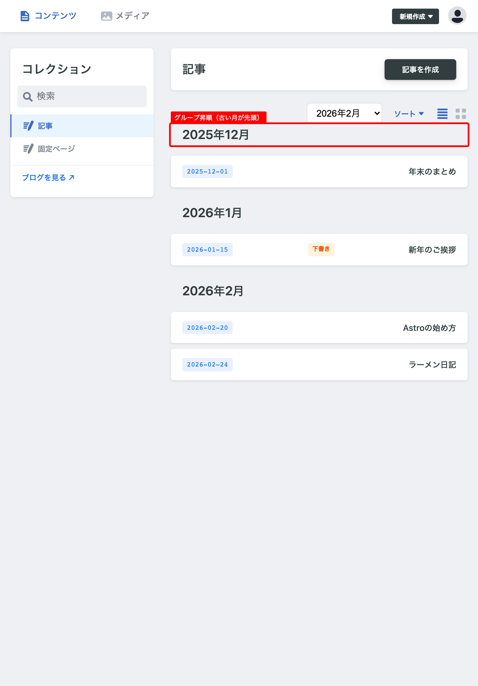
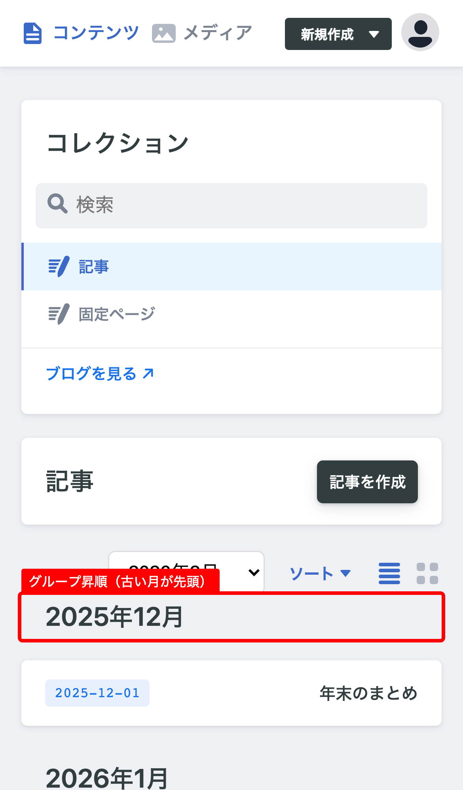
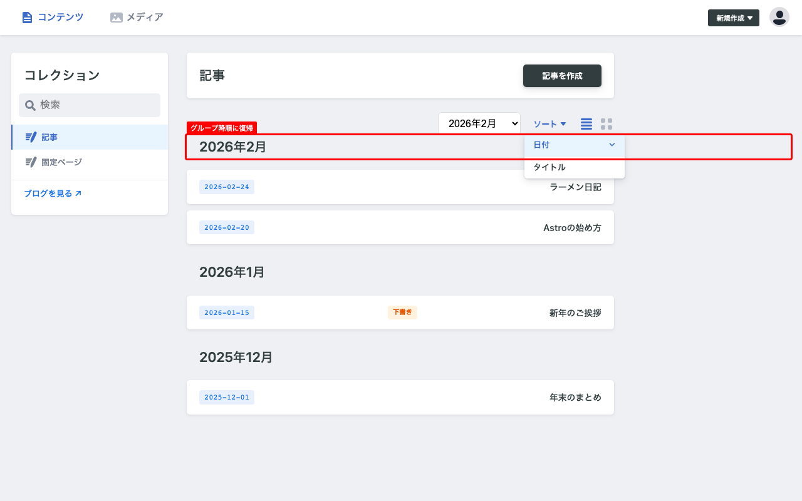
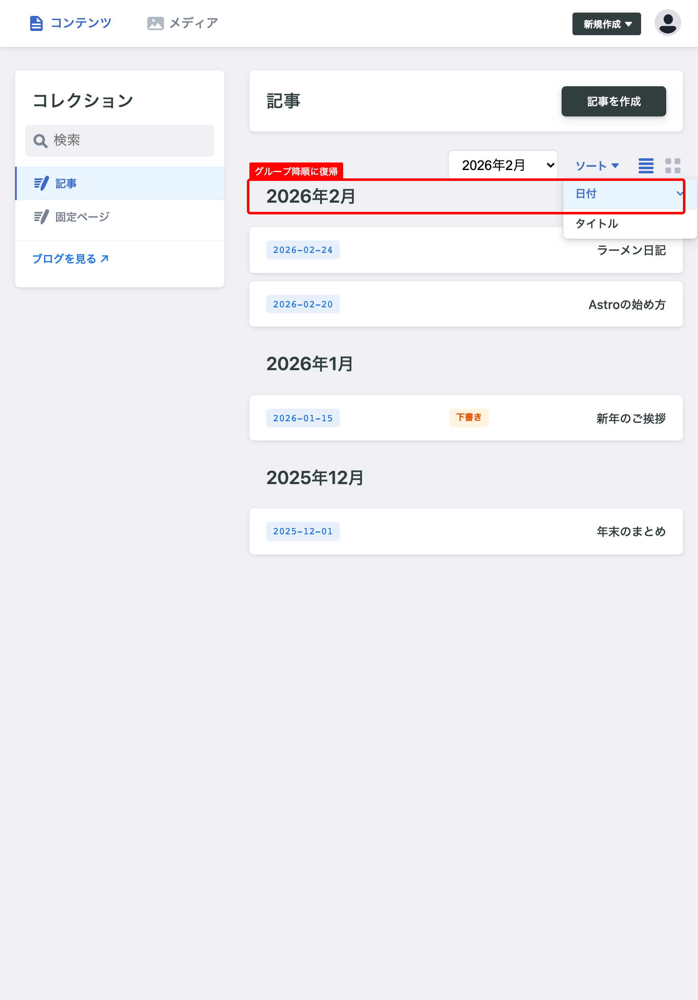
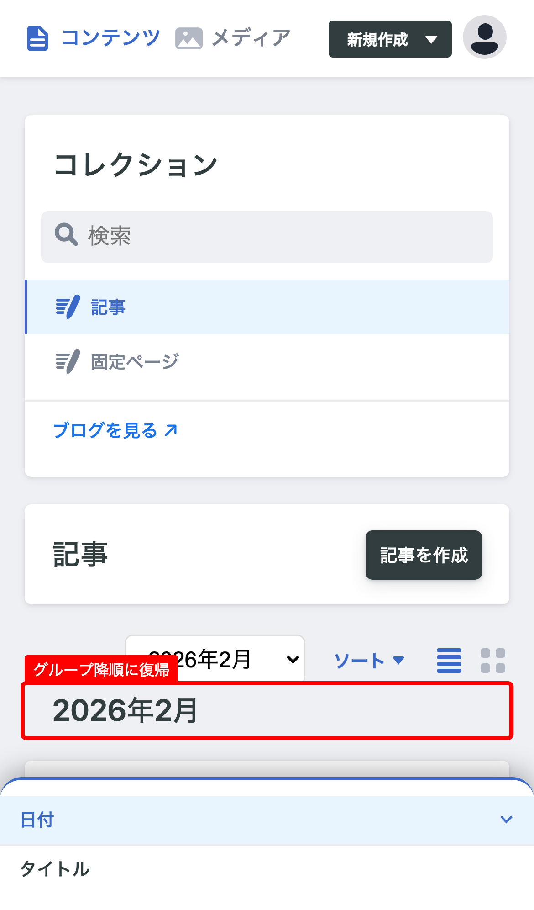

日付: 2026-02-27 | 要件: CMS-19（年月グルーピングUI改善）
| 検証項目 | PC (1280×800) | iPad Pro 11 (834×1194) | iPhone 14 (390×844) |
|---|---|---|---|
| デフォルト表示（降順・グルーピング有効・月セレクター） |  PASS ✓ 見出し: 2026年2月 → 2026年1月 → 2025年12月 グルーピングボタン非表示: ✓ 月セレクター: ✓ 日本語表記: ✓ |  PASS ✓ 見出し: 2026年2月 → 2026年1月 → 2025年12月 グルーピングボタン非表示: ✓ 月セレクター: ✓ 日本語表記: ✓ |  PASS ✓ 見出し: 2026年2月 → 2026年1月 → 2025年12月 グルーピングボタン非表示: ✓ 月セレクター: ✓ 日本語表記: ✓ |
| ソート昇順切替→グループ昇順 |  PASS ✓ 見出し: 2025年12月 → 2026年1月 → 2026年2月 |  PASS ✓ 見出し: 2025年12月 → 2026年1月 → 2026年2月 |  PASS ✓ 見出し: 2025年12月 → 2026年1月 → 2026年2月 |
| ソート降順復帰→グループ降順 |  PASS ✓ 見出し: 2026年2月 → 2026年1月 → 2025年12月 |  PASS ✓ 見出し: 2026年2月 → 2026年1月 → 2025年12月 |  PASS ✓ 見出し: 2026年2月 → 2026年1月 → 2025年12月 |